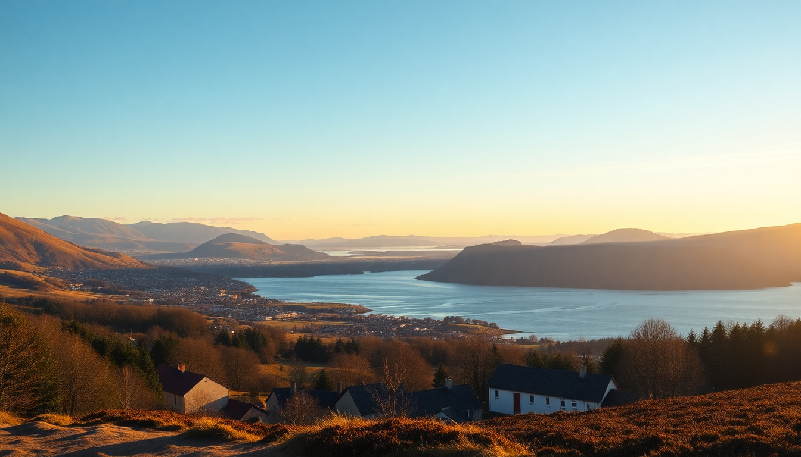

Best Day Trips from Edinburgh: Highlands, Loch Lomond & Stirling

We spent three days based in Edinburgh before we needed a break from the city crowds. A day trip north seemed like the obvious fix. After a few attempts—including one that felt like a marathon on a tour bus—I figured out which routes actually work for a single day. Here’s the honest breakdown of what’s worth your time and what’s just a long ride to a gift shop.
Is a day trip to the Scottish Highlands from Edinburgh actually worth it?
Short answer: yes, but only if you pick the right tour or route. The Highlands start about an hour north of Edinburgh, but the classic “Highlands in a day” tours often pack 10 hours into a bus with 45 minutes at each stop. That works if you just want a taste. We did the Rabbie’s “Loch Lomond & Stirling Castle” tour and it hit the right balance: enough time at each stop to actually walk around, not just take a photo.
The key is accepting that you won’t see Glen Coe and the Isle of Skye in one day. Don’t try. Focus on one region. The Trossachs National Park and Loch Lomond are close enough that you’ll spend more time exploring than sitting in traffic.
- Loch Lomond & the Trossachs – 1.5 hours from Edinburgh, good for a half-day hike or boat ride.
- Glen Coe – 2.5 hours each way. Doable but tight. Save it for an overnight trip.
- Cairngorms National Park – 2 hours north. Better for a dedicated two-day trip.
What’s the best way to visit Stirling Castle and the Wallace Monument?
Drive or take the train from Edinburgh to Stirling station (50 minutes, direct). The castle is a 15-minute uphill walk from the station. We walked, and it’s fine—just steady. The Wallace Monument is a separate hill on the other side of town. You can walk there too (30 minutes from the castle), but we took a taxi for £8.
Stirling Castle itself is the real deal. It’s smaller than Edinburgh Castle but feels more lived-in. The Great Hall and the Royal Palace rooms are restored with period detail. I preferred it to Edinburgh Castle because it wasn’t a zoo in August. Book tickets online in advance—the queue at the gate can be 20 minutes on a Saturday.
- Stirling Castle – Allow 2 hours. Don’t skip the Unicorn Tapestries in the Queen’s Inner Hall.
- Wallace Monument – 246 steps to the top. The view over the Forth Valley is worth the climb.
- Lunch spot – The Portcullis pub near the castle does a decent steak pie. Avoid the tourist café inside the castle grounds.
Should I visit Loch Lomond as a day trip from Edinburgh?
Yes, but skip the main tourist pier at Balloch. It’s crowded, full of souvenir shops, and the loch view is obstructed by parked cars. Instead, drive or take a tour that stops at Luss, a small village on the western shore. The pier there gives you a clear view of the loch and the mountains behind it.
We did a cruise from Luss on the S.S. Sir Walter Scott—it’s a 45-minute loop that gets you onto the water without committing to a full afternoon. If you’re driving, stop at the Drovers Inn near Inverarnan for a drink. It’s a 300-year-old pub with a stuffed bear in the lobby. Not fancy, but memorable.
- Luss – Best photo spot on Loch Lomond. Free parking if you arrive before 10am.
- Balloch – Skip unless you need a toilet stop or a soft play area for kids.
- Conic Hill – A 1.5-hour hike near Balmaha with panoramic views. Good for a short walk.
What are the best guided tours from Edinburgh for first-timers?
We used Rabbie’s for their small-group minibus tours (max 16 people). It’s not luxury—you’re in a van—but the driver-guides are actual locals who tell stories, not scripted facts. The “Loch Lomond, Stirling Castle & the Kelpies” tour is their best-selling option for a reason. It covers three distinct stops without feeling rushed.
The alternative is Timberbush Tours, which runs similar routes but uses slightly larger coaches. Both companies pick up from central Edinburgh (Royal Mile and Waterloo Place). If you want a private car, book through a local driver service like Scottish Tours—expect £200+ for a full day.
- Rabbie’s – Best for solo travelers and couples. Guides are storytellers.
- Timberbush – Better for families with kids (coaches have toilets).
- Scottish Tours – Private option. Worth it if you have a specific hike or pub in mind.
Can you visit the Kelpies and the Falkirk Wheel in the same day?
Yes, and you should. The Kelpies are 30 minutes from Edinburgh by car, and the Falkirk Wheel is 10 minutes further. Both are free to see from the outside. The Kelpies are massive—30 meters tall—and look best in the late afternoon light. The Falkirk Wheel is a rotating boat lift that connects two canals. You can ride it (45 minutes, £15 per person), but watching it cycle is almost as good.
We stopped at the Helix Park visitor center for a coffee. The café is basic but clean. If you’re driving, combine this with a morning at Stirling Castle. The three sites form a neat triangle that takes about 6 hours total.
- The Kelpies – Free. Parking £3. Allow 30 minutes.
- Falkirk Wheel – Boat ride or just watch from the viewing platform. Free entry.
- Helix Park – Good for a picnic if the weather holds.
What should I skip on a day trip from Edinburgh?
The “Harry Potter” train tour that goes to the Glenfinnan Viaduct. It’s a 4-hour drive each way from Edinburgh, and the train itself is just a regular ScotRail service with a steam engine on certain dates. The viaduct is iconic, but the day trip leaves you with 6 hours of driving for 20 minutes of viaduct viewing. Save it for a dedicated West Coast trip.
Also skip the “Whisky Trail” day tours. You’ll visit one distillery (usually Deanston or Glengoyne), spend 45 minutes in the gift shop, and get back to Edinburgh at 8pm tired and sober. If you want whisky, just go to The Scotch Whisky Experience on the Royal Mile—it’s touristy but the tasting is actually good.
- Glenfinnan Viaduct – Too far. Do it as a two-day trip from Fort William.
- Whisky Trail tours – One distillery stop isn’t worth the bus time.
- Edinburgh Dungeon – Not a day trip, but skip it anyway. Overpriced and scripted.
FAQ
Is it better to rent a car or take a tour for day trips from Edinburgh? Rent a car if you have at least two people and want to stop at small villages or hike. Tours are better for solo travelers or anyone who doesn’t want to navigate single-track roads. We rented from Enterprise at Edinburgh Haymarket—£45 for a day including insurance. The roads to Loch Lomond are easy; the A82 north of Glasgow gets narrow but is manageable.
What time should I leave Edinburgh for a day trip? Leave by 7:30am. The A9 and M80 get congested after 8am, especially on weekends. We left at 7:15 for Stirling and arrived at the castle before the crowds. For Loch Lomond, aim to be at Luss by 9:30am to get parking and a quiet walk before the tour buses roll in at 11.
Are day trips from Edinburgh suitable for kids? Yes, if you keep the driving under 2 hours each way. Stirling Castle has interactive exhibits in the palace kitchens, and the Kelpies are a hit with younger kids. The Falkirk Wheel boat ride is short enough to hold attention. Avoid the long Highlands tours—kids get restless on a 10-hour bus day.
Conclusion
- Stirling Castle is the best single attraction within an hour of Edinburgh—book ahead and combine with the Wallace Monument.
- Loch Lomond is worth it if you skip Balloch and go straight to Luss or Balmaha.
- Rabbie’s tours offer the best balance of time and value for first-time visitors.
- Skip the long-haul Highlands tours unless you have two days to spare. Glen Coe and Skye deserve more than a photo stop.
- Drive yourself if you want flexibility. The roads are fine, and parking at most sites costs £3–£8.